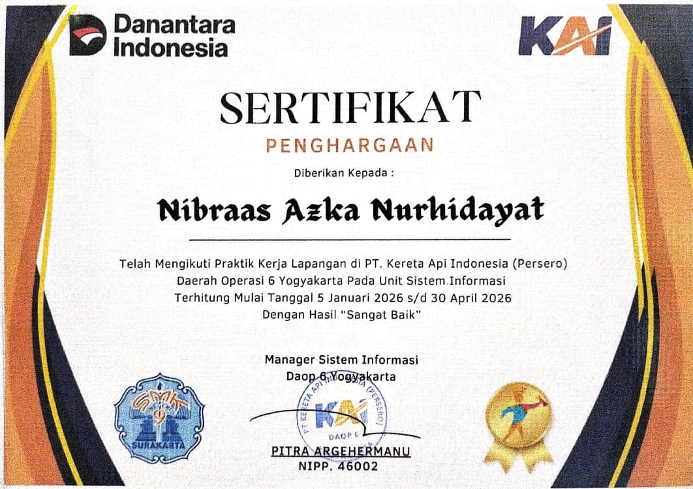

Featured Projects



Hands-on internship experience supporting network systems, CCTV surveillance, fiber optic maintenance, and Windows deploymentat PT KAI Daop 6 Yogyakarta.
Interested in full-time IT Support, Network Technician, or Helpdesk roles with opportunities to grow in professional IT environments.
Installation, maintenance, recording retrieval
PIDS indoor/outdoor systems
Hotspot, firewall rules, VLAN, VPN
DHCP server, traffic shaping
Wallmount servers, Windows 10/11
Hardware troubleshooting
Splicing, OTDR testing, Cat6 crimping
Fiber optic network certification
Traffic analysis, Cacti monitoring
SQL databases, system administration
Cisco Packet Tracer, GNS3
VoIP P2P, network topology design